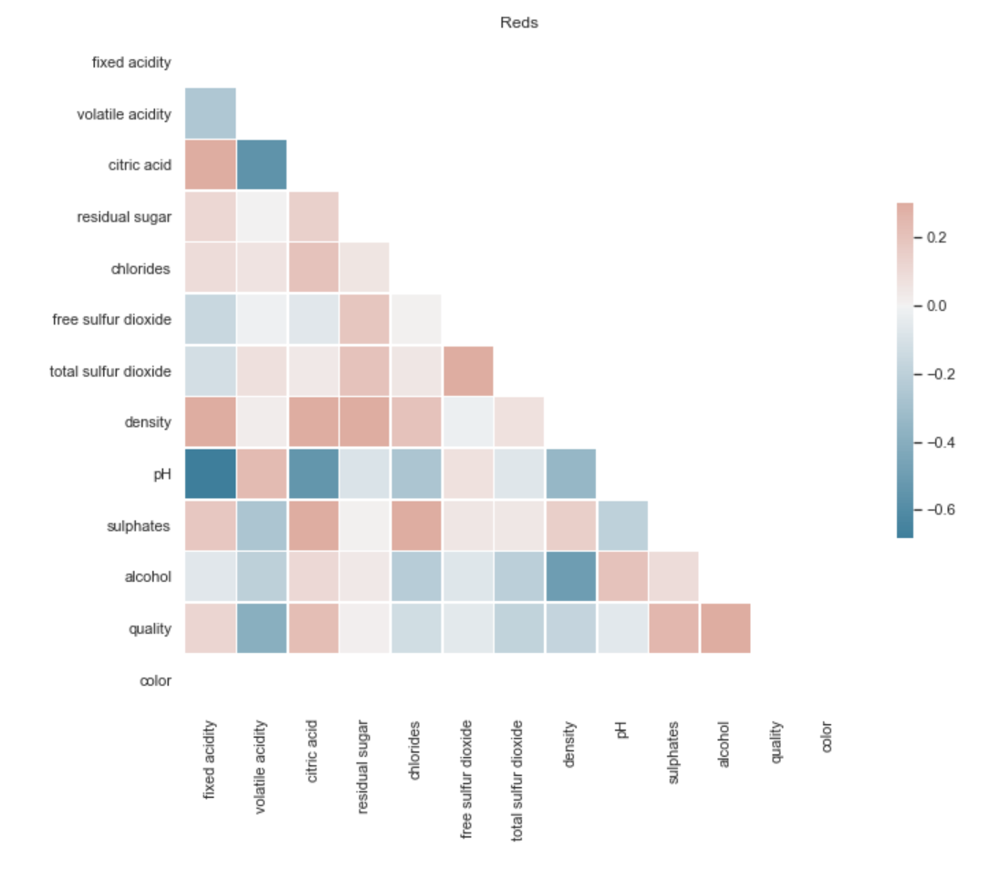

Data
I used two datasets; red and white wine quality combined, from UCI's database. This data lists the measurements of several elements in a particular wine varietal in Portugal. There are both red and white versions of this partcular wine. I brought the data into a jupyter notebook and appended the datasets together after adding another column containing the "color" value for the wine, white being 0 and red being 1.
Exploratory Analysis
I wanted to identify how the features interacted with each other for both red and white wine and get an idea of what I could expect from this model. I made some heatmaps to explore the relaionships between different features.


I noticed the color had a strong relationship to a couple features so I made histograms to visualize more specific relationships between those wines.
Machine Learning
I defined the target feature (color of wine) and then dropped color from the test dataset. I ran a train_test_split function using the data without the color classification to test on ("data"), as well as the data that still included the target metric ("target") which was used to train the model.
I used the DecisionTreeCLassifier() and fit the training dataset to the model. I then used a RandomForestCLassifier() function to fit the train and test data using 100 estimators. The score of both tests were very high. I then printed out each feature and its relative importance in the model.
I plotted the relative importances on a horizontal bar chart.
According to the model, there are two highly prominent features that correlate to wine color, and those are total sulfur dioxides and chlorides.
The model performed very well, in part becuase there were a lot of features, and two of them had high relative importance. This leads me to believe there are relatively large differences in the chemical makeup between red and white wine on an elemental level.
I would have liked to cross validate this model, but since the scores were quite high to begin with, it made me more interested in finding a more challenging model. I would be interested in trying an analysis of predicting a continuous variable such as total sulfure dioxide from other continous variables such as chloride and acidity.